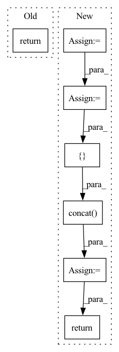

Pattern ID :3124

Before Change
if _result is None or _result.empty:
return _result
else:
return self._process_data(_result, symbol, interval)
else:
raise ValueError(f"cannot support {interval}")
return self._process_data(_result, interval)
After Change
raise ValueError(f"cannot support {interval}")
symbol, exchange = symbol.split(".")
exchange = "sh" if exchange == "ss" else "sz"
code = f"{exchange}.{symbol}"
start_date = start_datetime.strftime("%Y-%m-%d")
end_date = end_datetime.strftime("%Y-%m-%d")
performance_express_report_df = self.get_performance_express_report_df(code, start_date, end_date)
profit_df = self.get_profit_df(code, start_date, end_date)
forecast_report_df = self.get_forecast_report_df(code, start_date, end_date)
growth_df = self.get_growth_df(code, start_date, end_date)
df = pd.concat(
[performance_express_report_df, profit_df, forecast_report_df, growth_df],
axis=0,
)
return df
class PitNormalize(BaseNormalize):
In pattern: SUPERPATTERN
Frequency: 3
Non-data size: 7
Instances
Fragment ID: 11969974
Project Name: microsoft/qlib
Commit Name: 8efc8b92ef1ec4abb27cc70502a19aafc383c023
Time: 2022-03-18
Author: 32626585+Chaoyingz@users.noreply.github.com
File Name: scripts/data_collector/pit/collector.py
M Class Name: PitCollector
N Class Name: PitCollector
M Method Name: get_data(5)
N Method Name: get_data(5)
M Parent Class: BaseCollector
N Parent Class: BaseCollector
M File Name: scripts/data_collector/pit/collector.py
N File Name: scripts/data_collector/pit/collector.py
M Start Line: 271
M End Line: 278
N Start Line: 202
N End Line: 217
'>
Before Change
"size": dataset["Size"]
})
return pd.DataFrame(datasets).sort_values("size")
After Change
})
datasets = pd.DataFrame(datasets).sort_values("size").head(5)
datasets["size"] = datasets["size"].apply(humanfriendly.format_size)
if extended:
details = datasets.dataset.apply(_analyze_dataset)
datasets = pd.concat([datasets, details], axis=1)
return datasets
'>
Fragment ID: 11969878
Project Name: sdv-dev/deepecho
Commit Name: 2b76be5d4faecb34879ceda962f8c9ae0a47194f
Time: 2020-08-08
Author: carles@pythiac.com
File Name: benchmark/deepecho/benchmark/dataset.py
M Class Name: AnonimousClass
N Class Name: AnonimousClass
M Method Name: get_datasets_list(1)
N Method Name: get_datasets_list(0)
M Parent Class:
N Parent Class:
M File Name: benchmark/deepecho/benchmark/dataset.py
N File Name: benchmark/deepecho/benchmark/dataset.py
M Start Line: 134
M End Line: 134
N Start Line: 137
N End Line: 155
'>
Before Change
// only reconstruct masked source patches
_, mask_length, _ = masked_target.shape
output = self.reconstruction_layer(source[:, -mask_length::, :])
return output, masked_target
def mask(self, x):
After Change
// add pos embed
x += self.encoder_position_embedding.clone().detach()
// get no mask patches
no_mask_x = x[~masks] // [B*0.25*L, embed_dim]
// index slicing needs reshape back in paddle: [B, 0.25L, embed_dim]
no_mask_x = no_mask_x.reshape([B, -1, C])
// encoder
enc_out = self.encoder(no_mask_x)
// encoder to decoder linear proj
enc_out = self.linear_projection(enc_out)
// shuffle the position embedding is equivalent to unshuffling tokens
expand_pos_embed = self.decoder_position_embedding.expand([B, -1, -1]).clone().detach()
pos_embed_no_mask = expand_pos_embed[~masks].reshape([B, -1, enc_out.shape[-1]])
pos_embed_mask = expand_pos_embed[masks].reshape([B, -1, enc_out.shape[-1]])
// dec in put, here use broadcasting for mask_token
dec_in = paddle.concat([enc_out + pos_embed_no_mask, self.mask_token + pos_embed_mask], axis=1)
// decoder
mask_len = pos_embed_mask.shape[1]
dec_out = self.decoder(dec_in, mask_len)
// reconstruct patches
output = self.reconstruction_layer(dec_out)
return output
class MAEFinetuneTransformer(nn.Layer):
'>
Fragment ID: 11969982
Project Name: br-idl/paddlevit
Commit Name: 03aa87698e6414ae335ca578f928be097a0bd0a4
Time: 2021-12-13
Author: xperzy@gmail.com
File Name: image_classification/MAE/transformer.py
M Class Name: MAEPretrainTransformer
N Class Name: MAEPretrainTransformer
M Method Name: forward(3)
N Method Name: forward(2)
M Parent Class: nn.Layer
N Parent Class: nn.Layer
M File Name: image_classification/MAE/transformer.py
N File Name: image_classification/MAE/transformer.py
M Start Line: 524
M End Line: 543
N Start Line: 523
N End Line: 551